Signal validation
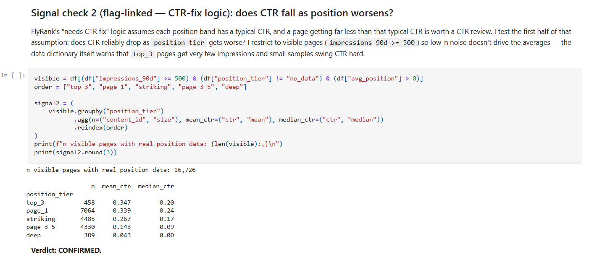
Signal validationTested the CTR-versus-position assumption before using it.
FlyRank's search data has no clean label for "which content needs help" — pages don't come pre-sorted into categories. My lane groups content into natural performance archetypes using impressions, CTR, position, engagement, and age, without inventing a label that isn't there.
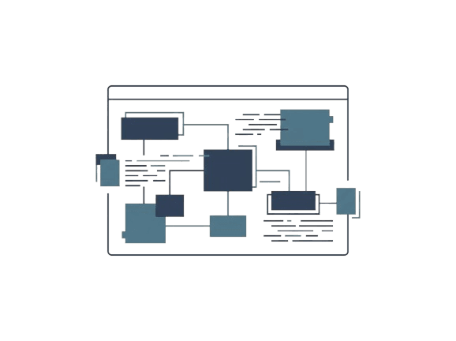
Same scaled features, same metric (silhouette score), one clustering model against a rule-based system — not a multi-model bake-off, just an honest head-to-head against the thing it had to beat.
I tried k = 2 through 7 before picking the best one. Bars animate to their real value as you scroll to them.
About 2.6% of pages were poorly matched to their cluster (negative silhouette) — almost all sitting on the border between a low-engagement and a very-high-engagement group. That's the honest limit of a hard-clustering method: some pages genuinely sit between two archetypes, and KMeans has to force a choice.
These are selected captures from the real internship notebooks behind the clustering workflow — not staged screenshots.

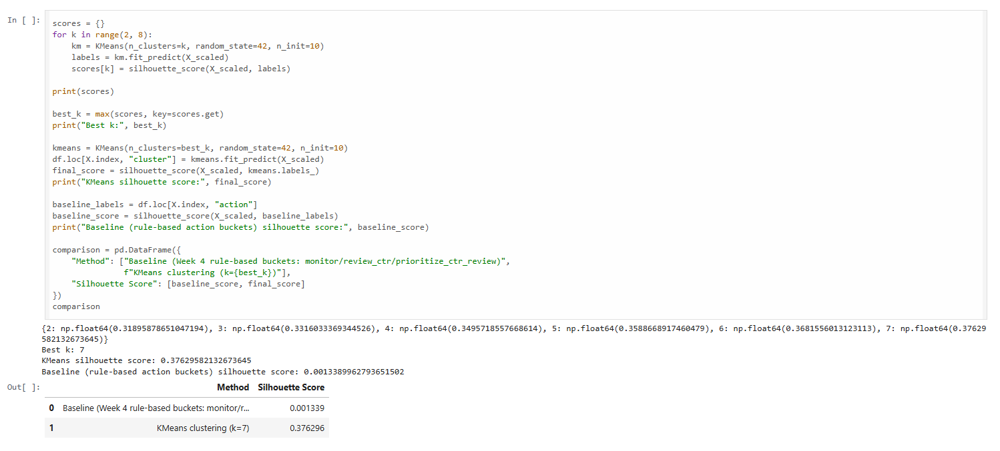
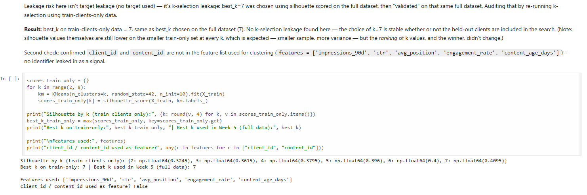
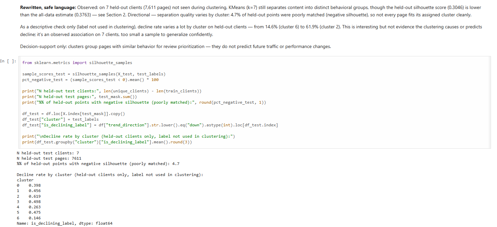
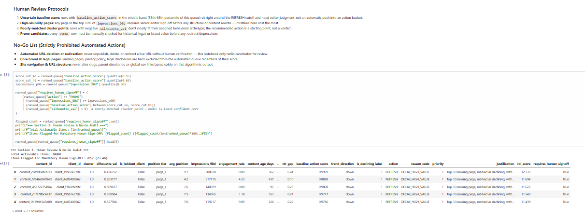
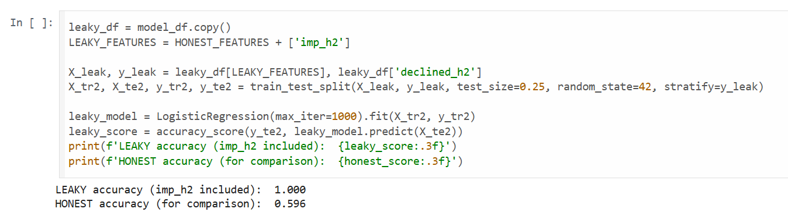
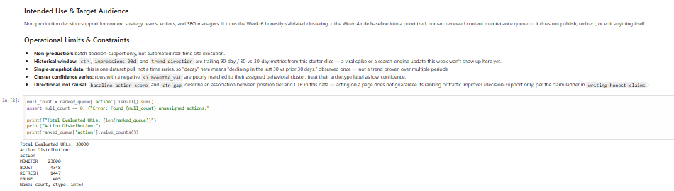
The capstone turns an anonymized sample of content pages into seven behavioral archetypes, then converts those groups into a practical, human-reviewed priority queue. Every recommendation stays traceable to observed signals.
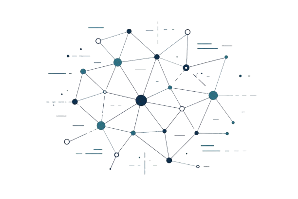
An anonymized sample of 30,000 content pages is grouped by KMeans into seven behavioral archetypes, then converted into a human-reviewed queue with one clear next action per page.
Validated honestly — the initial 0.376 silhouette became 0.305 under a client-held-out split, the more truthful measure of how the clusters hold up on unseen clients.
Selected, non-repeating captures show the model benchmark, cluster profiles, operating limits, and the final human-review queue.
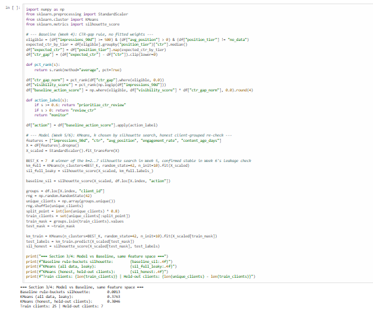
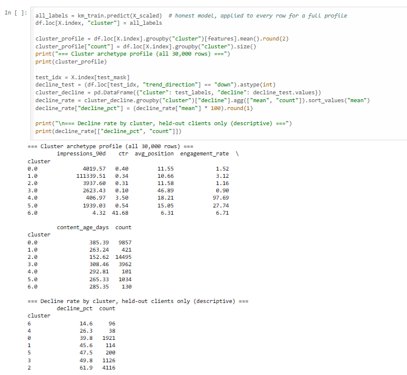
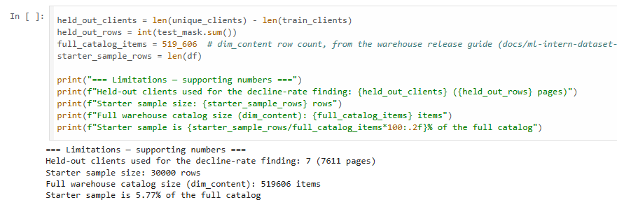
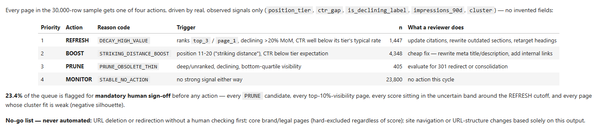
Explore the published paper, source repository, notebook, full report, ranked action queue, and capstone demo.